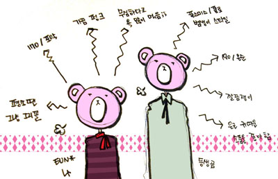
콤콤부라더스!!!
중간곰(차마 작은곰이라고는;;)이랑 큰곰!!!
8개월만에 상봉!! ^^***
아!!!!!!!!!!!!! 네이버!!!!!!!!!!!!!
네이버 블로그에는 가뭄에 콩나듯 공연후기나 여행후기를 올리고
그외 잡설은 이글루에 써야지 하고 이글루를 만든건데
이놈의 네이버가 말을 안듣는군요;;
기숙사 인터넷이 느린것도 있겠지만;;
그냥 편하고 계속 써오던게 있어서 네이버블로그 쓰고있었는데;;;
포스팅 다 옮겨와 버릴까싶은 마음이 살짝;;;;;
프란즈 공연후기 올리고
여행후기 쓰다가 속터져 돌아가시겠......(←성격급합니당;;)
전 포스팅에 써놨듯이
이번에 제대하믄서 2월16일부터 유럽돌구 26일날 저랑 런던서 만났습니다
26일부터 3월3일까지 광란의 런던탐험!! 쇼핑러쉬!!! 지옥의 릴레이!! 기타등등기타등등^^
둘다 평균남녀에 비해 키도크고 덩치고 큰데
별로 돌아댕긴다거나 사람많은곳을 좋아하는 성격이 아니라
집에서 둘이 뒹굴~뒹굴 하고있으믄
엄마님께서 가끔 손에 돈까지 쥐어주시믄서
제발 나가놀으라고 했었더랬죠^^;;;;
뭐랄까 동생곰이랑은 취향도 많이 틀리고 성격도 판이하게 다른데
쇼핑할때나 맛집탐험등등은 쿵짝이 잘 맞습니다^^
음악도 분명 카테고리는 같은데 카테고리안 세부카테고리가 완전 다르다던가;;
그러면서 묘하게 교집합되는 부분이 있는 요상한 취향들^^;;;
흠흠 우선 패션밸리로 보낼 쇼핑순회~사진만 골라서 올려봅니다^^
네이버어어~~~~~~~~~!!!!!!! 탯탯
중간곰(차마 작은곰이라고는;;)이랑 큰곰!!!
8개월만에 상봉!! ^^***
아!!!!!!!!!!!!! 네이버!!!!!!!!!!!!!
네이버 블로그에는 가뭄에 콩나듯 공연후기나 여행후기를 올리고
그외 잡설은 이글루에 써야지 하고 이글루를 만든건데
이놈의 네이버가 말을 안듣는군요;;
기숙사 인터넷이 느린것도 있겠지만;;
그냥 편하고 계속 써오던게 있어서 네이버블로그 쓰고있었는데;;;
포스팅 다 옮겨와 버릴까싶은 마음이 살짝;;;;;
프란즈 공연후기 올리고
여행후기 쓰다가 속터져 돌아가시겠......(←성격급합니당;;)
전 포스팅에 써놨듯이
이번에 제대하믄서 2월16일부터 유럽돌구 26일날 저랑 런던서 만났습니다
26일부터 3월3일까지 광란의 런던탐험!! 쇼핑러쉬!!! 지옥의 릴레이!! 기타등등기타등등^^
둘다 평균남녀에 비해 키도크고 덩치고 큰데
별로 돌아댕긴다거나 사람많은곳을 좋아하는 성격이 아니라
집에서 둘이 뒹굴~뒹굴 하고있으믄
엄마님께서 가끔 손에 돈까지 쥐어주시믄서
제발 나가놀으라고 했었더랬죠^^;;;;
뭐랄까 동생곰이랑은 취향도 많이 틀리고 성격도 판이하게 다른데
쇼핑할때나 맛집탐험등등은 쿵짝이 잘 맞습니다^^
음악도 분명 카테고리는 같은데 카테고리안 세부카테고리가 완전 다르다던가;;
그러면서 묘하게 교집합되는 부분이 있는 요상한 취향들^^;;;
흠흠 우선 패션밸리로 보낼 쇼핑순회~사진만 골라서 올려봅니다^^
네이버어어~~~~~~~~~!!!!!!! 탯탯
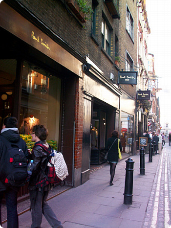
코벤트가든에 있는 폴스미스 매장
동생곰의 라브라브(.....;;) 폴스미스
셔츠랑 스니커즈 겟
셔츠는 제가봐도 넘 이뻤어요;;
그닥 튀지않으면서도 그속에서 독특한 디자인이 이쁘더라구용
전 폴스미스는 별 관심없는데 가끔 '엄훠 저건 너무내취향이야~~!!!!' 라는
가방이 눈에띄더라구요
크흑;ㅂ; 이래저래 위시리스트만 늘어납니당;;;;
첨에 매장이름도 모르고 캠던놀러갔을때 들렸었는데
나중에 일본에있는 물괴기언니가 링크보내줘서 알았음
이 브랜드도 여기저기 매장쉽게 볼수있습니다
내취향!!!내취향!!!!+_+
레고 귀걸이
단추 귀걸이+_+
이번 캠던락에서 대박은 이곳!!!!
로봇!!!!!!! 여행책자에는 귀여운소품이 많다고 소개되었는데
정작 동생곰이랑 같이 불타오른건 후드티!!!!!+_+
발상이 늠 재미있다;ㅂ;
-세탁은 못하겠지??
(안에 세탁가능이라 써있긴하지만;; 저 비니루가 어디 믿음직해보여야지;;)
-몇번 못입을거 같은데 25파운드라고?? 살까? 가격이 촘;;
(25였는지 35였는지 붕어기억력;;)
-그.........그래도 너무 귀여워;;;
둘이서 마구 이러믄서 호들갑;;
결국 캠던락 떠나기 전에 다시한번 가게에 들려서 후드티 질렀습니다^^
동생곰 여행왔는데 기념이닷!! 싶어서 마침 L사이즈 한장 남아있고해서
동생곰한테 선물^^***
이래저래 럭키였죵 ㅎㅎ
(자!! 어서 날 훌륭한 누님이라 불러!! 어서!!! ←;;;)
반팔티 종류도 있고 그냥 후드티고 있고
여러종류였있었는데 진짜 처음봤을때 그 귀여움이란///
.......조만간 저도 달려가서 한장 더 지를지도 모르겠군용;;;
햄버거가 무지커서 하나사서 둘이 나눠먹었음
돌아가는길도 황당하게도 가장 가까운 지하철이 문을 닫아서(....;;)
너무걸어서 아픈 발바닥을 질질끌면서 신나게 걸어가는중;;
영국와서 학교댕기구 그냥 학교-기숙사-타운 왔다갔다하며 살다가
이렇게 한 4~5일 연속으로 마구 런던을 돌아다니구 야경을 보니까
아 진짜 내가 영국에 살고있구나;; 란 느낌? ^^;;
이날 야경보니까 촘 실감이 나더라구요;;;
죽음의 릴레이 ㅋㅋㅋㅋㅋㅋ
본드스트릿 대따 구석진 곳에 숨어있어요
가격은 훌륭합니다///////
동생곰의 라브라브(.....;;) 폴스미스
셔츠랑 스니커즈 겟
셔츠는 제가봐도 넘 이뻤어요;;
그닥 튀지않으면서도 그속에서 독특한 디자인이 이쁘더라구용
전 폴스미스는 별 관심없는데 가끔 '엄훠 저건 너무내취향이야~~!!!!' 라는
가방이 눈에띄더라구요
크흑;ㅂ; 이래저래 위시리스트만 늘어납니당;;;;
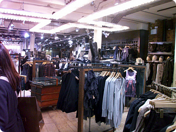
올세인츠 매장첨에 매장이름도 모르고 캠던놀러갔을때 들렸었는데
나중에 일본에있는 물괴기언니가 링크보내줘서 알았음
이 브랜드도 여기저기 매장쉽게 볼수있습니다
내취향!!!내취향!!!!+_+
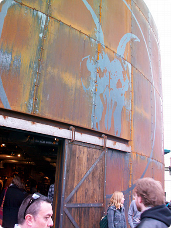
캠던락 가는쪽에 있는 올세인츠 매장 입구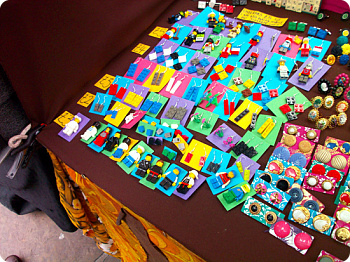
캠던락 안에있는 악세사리판매대레고 귀걸이
단추 귀걸이+_+
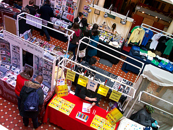
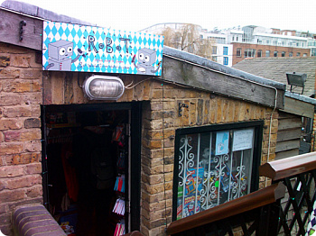
이번 캠던락에서 대박은 이곳!!!!
로봇!!!!!!! 여행책자에는 귀여운소품이 많다고 소개되었는데
정작 동생곰이랑 같이 불타오른건 후드티!!!!!+_+
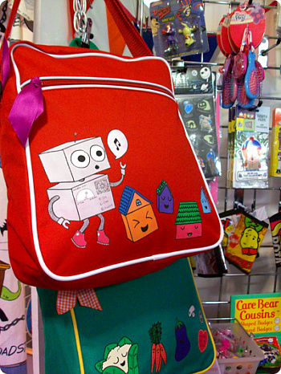
요래요래 귀여운 가방이나 아기자기한 소품도 많지만...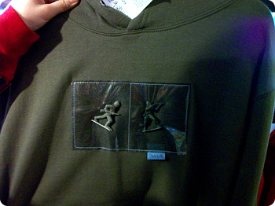
우왕 이거뭐야!!!!!!!! 완전귀여워;ㅂ;발상이 늠 재미있다;ㅂ;
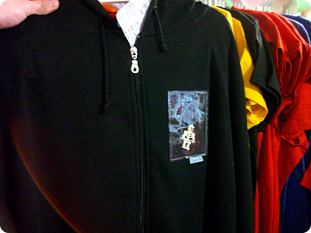
요 지퍼 후드티를 놓고 지를까말까 둘이서 한참을 고민했는데-세탁은 못하겠지??
(안에 세탁가능이라 써있긴하지만;; 저 비니루가 어디 믿음직해보여야지;;)
-몇번 못입을거 같은데 25파운드라고?? 살까? 가격이 촘;;
(25였는지 35였는지 붕어기억력;;)
-그.........그래도 너무 귀여워;;;
둘이서 마구 이러믄서 호들갑;;
결국 캠던락 떠나기 전에 다시한번 가게에 들려서 후드티 질렀습니다^^
동생곰 여행왔는데 기념이닷!! 싶어서 마침 L사이즈 한장 남아있고해서
동생곰한테 선물^^***
이래저래 럭키였죵 ㅎㅎ
(자!! 어서 날 훌륭한 누님이라 불러!! 어서!!! ←;;;)
반팔티 종류도 있고 그냥 후드티고 있고
여러종류였있었는데 진짜 처음봤을때 그 귀여움이란///
.......조만간 저도 달려가서 한장 더 지를지도 모르겠군용;;;
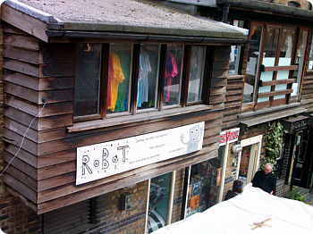
간판도 너무 귀여워요^^***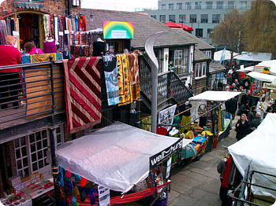
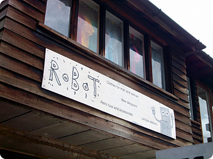
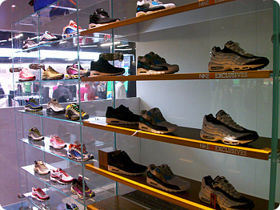
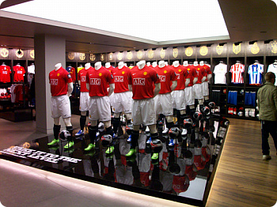
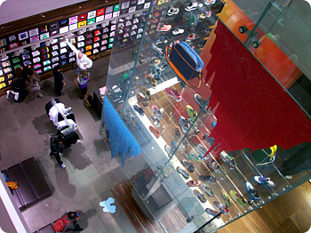
요건 옥스포드서커스 역앞 나이키타운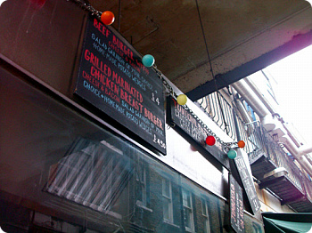
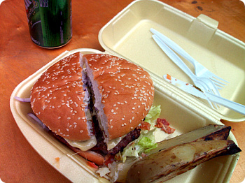
유명하다는 카페1001햄버거가 무지커서 하나사서 둘이 나눠먹었음
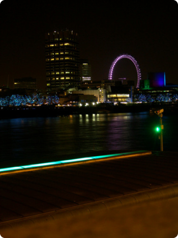
셋째날인가 테이트모던을 못찾아서 죽을만큼 헤매고돌아가는길도 황당하게도 가장 가까운 지하철이 문을 닫아서(....;;)
너무걸어서 아픈 발바닥을 질질끌면서 신나게 걸어가는중;;
영국와서 학교댕기구 그냥 학교-기숙사-타운 왔다갔다하며 살다가
이렇게 한 4~5일 연속으로 마구 런던을 돌아다니구 야경을 보니까
아 진짜 내가 영국에 살고있구나;; 란 느낌? ^^;;
이날 야경보니까 촘 실감이 나더라구요;;;
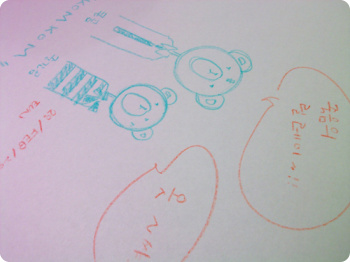
펍에 들어가서 한 낙서죽음의 릴레이 ㅋㅋㅋㅋㅋㅋ
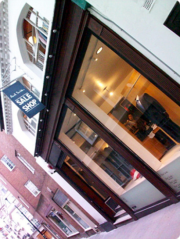
폴스미스 세일샵본드스트릿 대따 구석진 곳에 숨어있어요
가격은 훌륭합니다///////
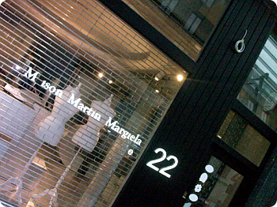
마틴마르지엘라 매장
일요일은 찾아간 시간이 너무 늦었고
여행책자에 나와있는 주소에서 좀더 대로쪽으로 가게이전을 했더라구용;;
월요일날 다시 찾아갔다능;;;
넷째날 처음 찾아간 곳은 ABBEY ROAD
역에 비틀즈 커피숍도 있다^^***
둘이서 좋~다고 차없는틈 타서 재빨리 한명은 횡단보도 건더고
한명은 멀리서 사진찍고
이날 ABBEY ROAD방문했던 다른 관광객들은 이런 우릴보고 마구 웃었음^^;;
기념으로 콤콤도 그리고 가자!!! ㅎㅎ
일요일은 찾아간 시간이 너무 늦었고
여행책자에 나와있는 주소에서 좀더 대로쪽으로 가게이전을 했더라구용;;
월요일날 다시 찾아갔다능;;;
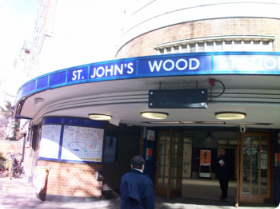
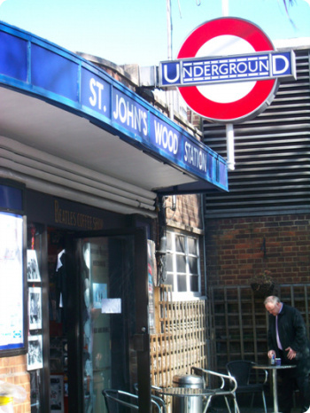
넷째날 처음 찾아간 곳은 ABBEY ROAD
역에 비틀즈 커피숍도 있다^^***
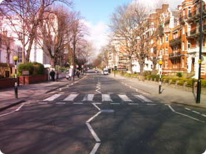
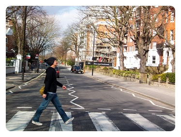
둘이서 좋~다고 차없는틈 타서 재빨리 한명은 횡단보도 건더고
한명은 멀리서 사진찍고
이날 ABBEY ROAD방문했던 다른 관광객들은 이런 우릴보고 마구 웃었음^^;;
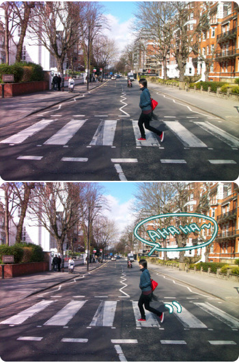
......생각해보니 반대로 달리고있는 나;;OTL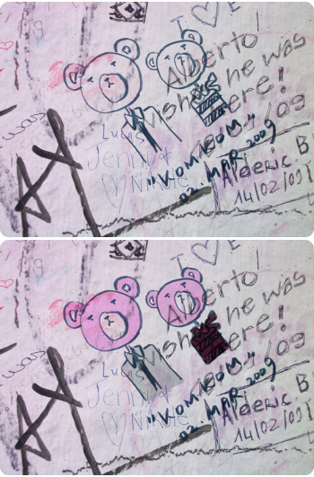
기념으로 콤콤도 그리고 가자!!! ㅎㅎ
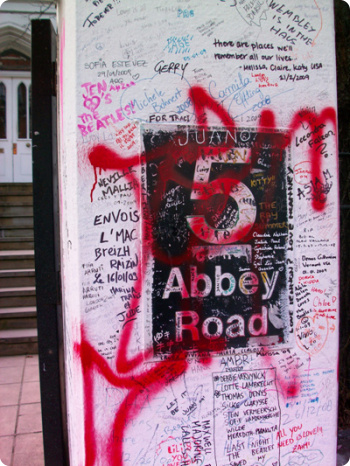
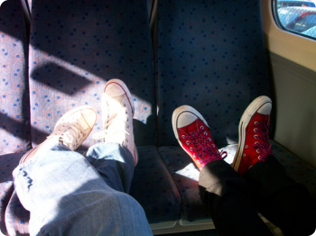
동생곰발 내발
정말 답이없는 두명의 즈질체력을 실감한 5박6일이었지만
덕분에 저도 구경 잘했습니다//
우리 겨울 복싱데이때 한번 더 달리자구!!!+_+
정말 답이없는 두명의 즈질체력을 실감한 5박6일이었지만
덕분에 저도 구경 잘했습니다//
우리 겨울 복싱데이때 한번 더 달리자구!!!+_+